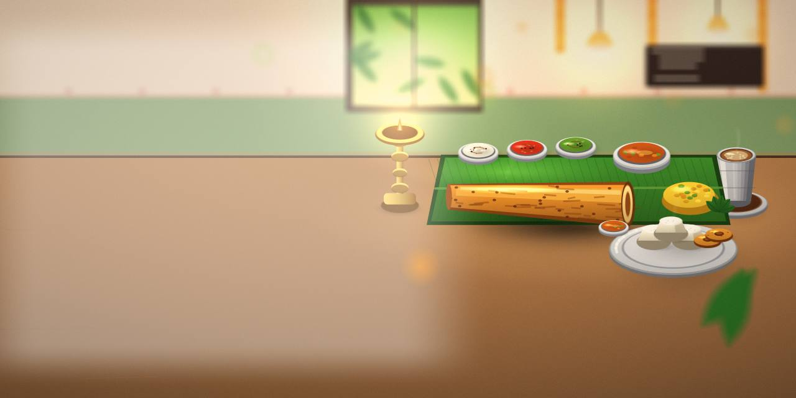
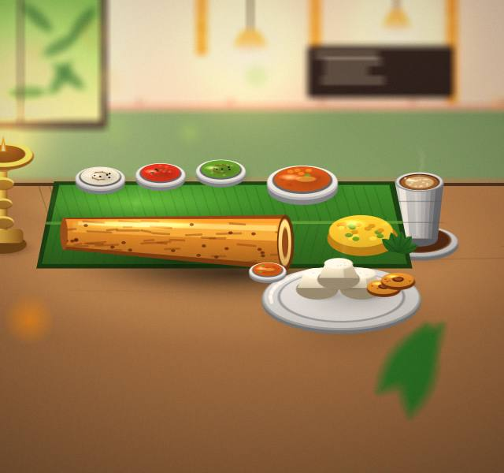
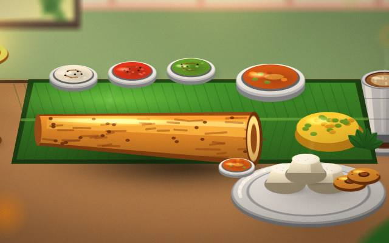
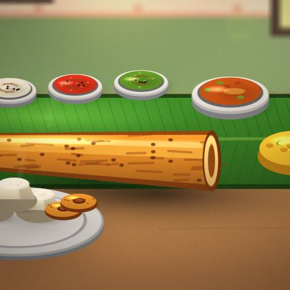
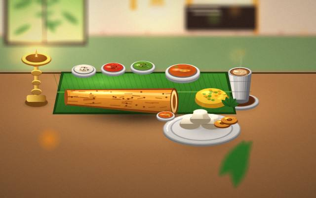
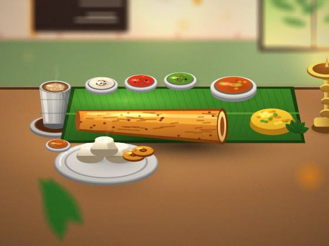

Starters
Curious about Starters? Ask us anything.

South Indian restaurant · Chennai
Bring friends; the food is made for sharing.

Tell us what matters most to you.
You'll find us in Chennai. Ask what's included before you decide.
Curious about Starters? Ask us anything.
Curious about Mains? Ask, and we'll talk you through it.
Pair Desserts with a side or a drink; the team will suggest.
Ask the team what goes into Drinks; they like the question.




Call or message us to reserve a table; say if it is a celebration.
Start with and build from there.
Dosas and idlis are best eaten straight away.
And how to do it politely.
Notes from everyday experience.
Five questions worth asking before you make up your mind.
Ask the team at the time of booking; they'll tell you what is available for vegetarians.
Tell us the date and numbers, and we'll say what we can do.
We're in Chennai; reach out for directions.
We will tell you what to bring or prepare when you get in touch.
Hungry? Book a table.
Book a table